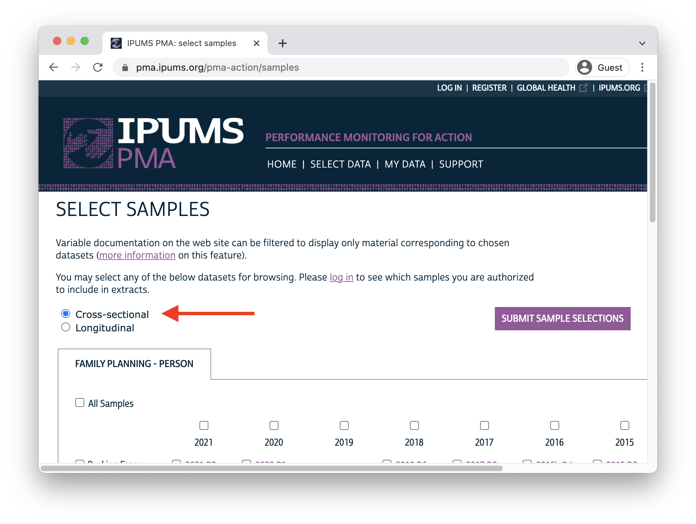

This month, IPUMS is excited to announce the release of harmonized panel data focused on the reproductive and sexual health of women surveyed by our partners at Performance Monitoring for Action (PMA). Participating women will be interviewed up to three times over three years, so we’ve made big changes to our data extract system making it easy to compare an individual’s responses across multiple rounds of data collection. Cross-sectional samples of women, households, and service delivery points remain available as before, but we’ve also streamlined navigation for users interested in longitudinal analysis with these new panel surveys.
Here on the IPUMS PMA blog, today marks the beginning of a new series in which we’ll be using R to:
- import and explore the structure of IPUMS PMA panel data
- understand key sample design and follow-up issues
- build indicators measuring change in contraceptive use status and family planning outcomes
- analyze monthly recall data from the included contraceptive calendar
Additionally, we’re also developing a second online course for newcomers to longitudinal analysis that will complement our existing Introduction to IPUMS PMA Data Analysis. Later this year, we also plan to release a PDF longitudinal handbook adapted from this blog that will include examples in both R and Stata. Stay tuned for further announcements here and on Twitter in the coming weeks.
Background
Dating back to 2013, the original PMA survey design included high-frequency, cross-sectional samples of women and service delivery points collected from eleven countries participating in Family Planning 2020 (FP2020) - a global partnership that supports the rights of women and girls to decide for themselves whether, when, and how many children they want to have. These surveys were designed to monitor annual progress towards FP2020 goals via population-level estimates for several core indicators.
Beginning in 2019, PMA surveys were redesigned under a renewed partnership called Family Planning 2030 (FP2030). These new surveys have been refocused on reproductive and sexual health indicators, and they feature a longitudinal panel of women of childbearing age. This design will allow researchers to measure contraceptive dynamics and changes in women’s fertility intentions over a three year period via annual in-person interviews.1
Questions on the redesigned survey cover topics like:
- awareness, perception, knowledge, and use of contraceptive methods
- perceived quality and side effects of contraceptive methods among current users
- birth history and fertility intentions
- aspects of health service provision
- domains of empowerment
Sampling
PMA panel data includes a mixture of nationally representative and sub-nationally representative samples from eight participating countries. The panel study consists of three data collection phases, each spaced one year apart. IPUMS PMA has released data from the first two phases for countries where Phase 1 data collection began in 2019; we have released data from only the first phase for countries where Phase 1 data collection began in August or September 2020. Phase 3 data collection and processing is currently underway.
| Sample | Phase 1 Data Collection* | Phase 1 | Phase 2 | Phase 3 |
|---|---|---|---|---|
| Burkina Faso | Dec 2019 - Mar 2020 | x | x | |
| Cote d’Ivoire | Sep 2020 - Dec 2020 | x | ||
| DRC - Kinshasa | Dec 2019 - Feb 2020 | x | x | |
| DRC - Kongo Central | Dec 2019 - Feb 2020 | x | x | |
| India - Rajasthan | Aug 2020 - Oct 2020 | x | ||
| Kenya | Nov 2019 - Dec 2019 | x | x | |
| Nigeria - Kano | Dec 2019 - Jan 2020 | x | x | |
| Nigeria - Lagos | Dec 2019 - Jan 2020 | x | x | |
| Uganda | Sep 2020 - Oct 2020 | x |
PMA uses a multi-stage clustered sample design, with stratification at the urban-rural level or by sub-region. Geographically defined sample clusters - called enumeration areas (EAs) – are provided by the national statistics agency in each country.2 These EAs are sampled using a probability proportional to size (PPS) method relative to the population distribution in each stratum.
At Phase 1, 35 household dwellings were selected at random within each EA. Resident enumerators visited each dwelling and invited one household member to complete a Household Questionnaire3 that includes a census of all household members and visitors who stayed there during the night before the interview. Female household members and visitors aged 15-49 were then invited to complete a subsequent Phase 1 Female Questionnaire.4
One year later, resident enumerators visited the same dwellings and administered a Phase 2 Household Questionnaire. A panel member in Phase 2 is any woman still age 15-49 who could be reached for a second Female Questionnaire, either because:
- she still lived there, or
- she had moved elsewhere within the study area,5 but at least one member of the Phase 1 household remained and could help resident enumerators locate her new dwelling.6
Additionally, resident enumerators administered the Phase 2 Female Questionnaire to new women in sampled households who:
- reached age 15 after Phase 1
- joined the household after Phase 1
- declined the Female Questionnaire at Phase 1, but agreed to complete it at Phase 2
When you select the new Longitudinal sample option at checkout, you’ll be able to include responses from every available phase of the study. These samples are available in either “long” format (responses from each phase will be organized in separate rows) or “wide” format (responses from each phase will be organized in columns).

In addition to following up with women in the panel over time, PMA also adjusted sampling so that a cross-sectional sample could be produced concurrently with each data collection phase. These samples mainly overlap with the data you’ll obtain for a particular phase in the longitudinal sample, except that replacement households were drawn from each EA where more than 10% of households from the previous phase were no longer there. Conversely, panel members who were located in a new dwelling at Phase 2 will not be represented in the cross-sectional sample drawn from that EA. These adjustments ensure that population-level indicators may be derived from cross-sectional samples in a given year, even if panel members move or are lost to follow-up.
You’ll find PMA cross-sectional samples dating back to 2013 if you select the Cross-sectional sample option at checkout.

Survey Design Elements
In upcoming posts, we’ll demonstrate how to incorporate PMA sampling weights and information about its stratified cluster sampling procedure into your analysis. To do so, we’ll rely on tools from the srvyr package.7
Whether you intend to work with a new Longitudinal or Cross-sectional data extract, you’ll find the same set of sampling weights available for all PMA Family Planning surveys dating back to 2013.
- HQWEIGHT can be used to generate cross-sectional population estimates from questions on the Household Questionnaire.8
- FQWEIGHT can be used to to generate cross-sectional population estimates from questions on the Female Questionnaire.9
- EAWEIGHT can be used to compare the selection probability of a particular household with that of its EA.
Additionally, PMA created a new weight, PANELWEIGHT,
which should be used in longitudinal analyses spanning multiple phases,
as it adjusts for loss to follow-up. PANELWEIGHT is
available only for Longitudinal data extracts.
For example, suppose we wanted to estimate the proportion of
reproductive age women in Burkina Faso who were using contraception at
the time of data collection for both Phase 1 and Phase 2. In a
cross-sectional or “long” longitudinal extract, you’ll find this
information in the variable CP.
In a “wide” longitudinal extract, you’ll find it in CP_1
for Phase 1, and in CP_2 for Phase 2. We’ll be working with
a “wide” extract loaded into R as an object called dat.
dat %>% count(CP_1, CP_2)
# A tibble: 5 × 3
CP_1 CP_2 n
<int+lbl> <int+lbl> <int>
1 0 [No] 0 [No] 2589
2 0 [No] 1 [Yes] 821
3 1 [Yes] 0 [No] 556
4 1 [Yes] 1 [Yes] 1241
5 99 [NIU (not in universe) or missing] 0 [No] 5The srvyr package provides two functions we’ll need to
obtain our population estimate. The first, as_survey_design,
allows us to specify PANELWEIGHT as a sampling weight. The
second, survey_mean,
uses that weight in an estimating function; in this case, we’ll get the
estimated proportion where CP_1 and CP_2 both
have the value 1 [Yes] after removing missing / NIU
responses with CP_1 < 90 & CP_2 < 90.
In upcoming posts, we’ll use vartype = "ci" to include a
95% confidence interval set by level = 0.95 any time we
calculate a population estimate. For discrete variables, we’ll also
include proportion = TRUE and
prop_method = "logit". In practice, there are large number
of ways to calculate a confidence interval for a proportion.11 The srvyr package includes
several options for prop_method,12
but we’ll use these settings because:
- they ensure that each proportion’s confidence interval only includes values between 0% and 100%,
- they will include the real-world population proportion close to 95% of the time,
- the
logitmethod yields a relatively narrow interval compared with other options, and - these intervals will match the default intervals reported by Stata and SPSS survey proportion functions.
library(srvyr)
dat %>%
as_survey_design(weight = PANELWEIGHT) %>%
filter(CP_1 < 90 & CP_2 < 90) %>%
summarise(
survey_mean(
CP_1 * CP_2,
vartype = "ci",
level = 0.95,
proportion = TRUE,
prop_method = "logit"
)
)
# A tibble: 1 × 3
coef `_low` `_upp`
<dbl> <dbl> <dbl>
1 0.188 0.174 0.203You can also provide information about sample clusters via as_survey_design.
In general, we expect households selected from the same EA to share
certain characteristics, such that some degree of variation seen in a
variable of interest may be non-random at the EA-level. To compensate,
you may wish the expand the standard errors produced by
survey_mean by providing EA identifiers in EAID.
Here, we include id = EAID_1.13
Compared with our original estimate, notice that the 95% confidence
interval for our contraceptive use estimate is wider when we provide
information about the clustered sample design - these are
“cluster-robust” standard errors.
dat %>%
as_survey_design(weight = PANELWEIGHT, id = EAID_1) %>%
filter(CP_1 < 90 & CP_2 < 90) %>%
summarise(
survey_mean(
CP_1 * CP_2,
vartype = "ci",
level = 0.95,
proportion = TRUE,
prop_method = "logit"
)
)
# A tibble: 1 × 3
coef `_low` `_upp`
<dbl> <dbl> <dbl>
1 0.188 0.163 0.215Finally, we’ll also use as_survey_design
to specify sample strata. For most samples, including Burkina Faso, this
information is included in the variable STRATA.
We’ll include it here with strata = STRATA_1.14
dat %>%
as_survey_design(weight = PANELWEIGHT, id = EAID_1, strata = STRATA_1) %>%
filter(CP_1 < 90 & CP_2 < 90) %>%
summarise(
survey_mean(
CP_1 * CP_2,
vartype = "ci",
level = 0.95,
proportion = TRUE,
prop_method = "logit"
)
)
# A tibble: 1 × 3
coef `_low` `_upp`
<dbl> <dbl> <dbl>
1 0.188 0.164 0.214The variable STRATA is not available for samples collected from DRC - Kinshasa or DRC - Kongo Central. If your extract includes any DRC sample, you’ll need to amend this variable to include one unique numeric code for each of those regions.
For example, let’s look at a different “wide” extract,
dat2, containing all of the samples included in this data
release. Notice that STRATA_1 lists the sample strata for
every COUNTRY
except for DRC, where you see the value NA.
dat2 %>% count(COUNTRY, STRATA_1)
# A tibble: 27 × 3
COUNTRY STRATA_1 n
<int+lbl> <int+lbl> <int>
1 1 [Burkina Faso] 85401 [Urban, Burkina Faso] 3058
2 1 [Burkina Faso] 85402 [Rural, Burkina Faso] 2154
3 2 [Congo, Democratic Republic] NA 3487
4 7 [Kenya] 40410 [Bungoma - urban, Kenya] 153
5 7 [Kenya] 40411 [Bungoma - rural, Kenya] 489
6 7 [Kenya] 40412 [Kakamega - urban, Kenya] 133
7 7 [Kenya] 40413 [Kakamega - rural, Kenya] 438
8 7 [Kenya] 40414 [Kericho - urban, Kenya] 249
9 7 [Kenya] 40415 [Kericho - rural, Kenya] 453
10 7 [Kenya] 40416 [Kiambu - urban, Kenya] 214
11 7 [Kenya] 40417 [Kiambu - rural, Kenya] 311
12 7 [Kenya] 40418 [Kilifi - urban, Kenya] 170
13 7 [Kenya] 40419 [Kilifi - rural, Kenya] 455
14 7 [Kenya] 40420 [Kitui - urban, Kenya] 153
15 7 [Kenya] 40421 [Kitui - rural, Kenya] 586
16 7 [Kenya] 40422 [Nairobi - urban, Kenya] 494
17 7 [Kenya] 40423 [Nandi - urban, Kenya] 260
18 7 [Kenya] 40424 [Nandi - rural, Kenya] 711
19 7 [Kenya] 40425 [Nyamira - urban, Kenya] 143
20 7 [Kenya] 40426 [Nyamira - rural, Kenya] 382
21 7 [Kenya] 40427 [Siaya - urban, Kenya] 130
22 7 [Kenya] 40428 [Siaya - rural, Kenya] 437
23 7 [Kenya] 40429 [West Pokot - urban, Kenya] 104
24 7 [Kenya] 40430 [West Pokot - rural, Kenya] 474
25 9 [Nigeria] 56606 [Lagos, Nigeria] 1089
26 9 [Nigeria] 56611 [Kano - Urban] 437
27 9 [Nigeria] 56612 [Kano - Rural] 561Now let’s see what happens when we try to produce population-level
estimates with STRATA_1:
dat2 %>%
as_survey_design(weight = PANELWEIGHT, id = EAID_1, strata = STRATA_1) %>%
filter(CP_1 < 90 & CP_2 < 90) %>%
group_by(COUNTRY, GEOCD, GEONG) %>%
summarise(
survey_mean(
CP_1 * CP_2,
vartype = "ci",
level = 0.95,
proportion = TRUE,
prop_method = "logit"
)
)
Error in (function (object, ...) : missing values in `strata'This fails because as_survey_design
encounters NA values in STRATA_1. Fortunately,
we can replace those values with numeric codes from the variable GEOCD:
dat2 %>% count(GEOCD)
# A tibble: 3 × 2
GEOCD n
<int+lbl> <int>
1 1 [Kinshasa] 1973
2 2 [Kongo Central] 1514
3 NA 14238If GEOCD is not NA, we’ll use its numeric
code in place of STRATA_1. Otherwise, we’d like to leave
STRATA_1 unchanged. However, because both variables include
value labels, we’ll first need remove them with as.numeric. To avoid
confusion with the original variable STRATA_1, we’ll call
our new variable STRATA_RECODE.
dat2 <- dat2 %>%
mutate(
STRATA_RECODE = if_else(
is.na(GEOCD),
as.numeric(STRATA_1),
as.numeric(GEOCD)
)
)
dat2 %>% count(GEOCD, STRATA_1, STRATA_RECODE)
# A tibble: 28 × 4
GEOCD STRATA_1 STRATA_RECODE n
<int+lbl> <int+lbl> <dbl> <int>
1 1 [Kinshasa] NA 1 1973
2 2 [Kongo Central] NA 2 1514
3 NA 40410 [Bungoma - urban, Kenya] 40410 153
4 NA 40411 [Bungoma - rural, Kenya] 40411 489
5 NA 40412 [Kakamega - urban, Kenya] 40412 133
6 NA 40413 [Kakamega - rural, Kenya] 40413 438
7 NA 40414 [Kericho - urban, Kenya] 40414 249
8 NA 40415 [Kericho - rural, Kenya] 40415 453
9 NA 40416 [Kiambu - urban, Kenya] 40416 214
10 NA 40417 [Kiambu - rural, Kenya] 40417 311
11 NA 40418 [Kilifi - urban, Kenya] 40418 170
12 NA 40419 [Kilifi - rural, Kenya] 40419 455
13 NA 40420 [Kitui - urban, Kenya] 40420 153
14 NA 40421 [Kitui - rural, Kenya] 40421 586
15 NA 40422 [Nairobi - urban, Kenya] 40422 494
16 NA 40423 [Nandi - urban, Kenya] 40423 260
17 NA 40424 [Nandi - rural, Kenya] 40424 711
18 NA 40425 [Nyamira - urban, Kenya] 40425 143
19 NA 40426 [Nyamira - rural, Kenya] 40426 382
20 NA 40427 [Siaya - urban, Kenya] 40427 130
21 NA 40428 [Siaya - rural, Kenya] 40428 437
22 NA 40429 [West Pokot - urban, Kenya] 40429 104
23 NA 40430 [West Pokot - rural, Kenya] 40430 474
24 NA 56606 [Lagos, Nigeria] 56606 1089
25 NA 56611 [Kano - Urban] 56611 437
26 NA 56612 [Kano - Rural] 56612 561
27 NA 85401 [Urban, Burkina Faso] 85401 3058
28 NA 85402 [Rural, Burkina Faso] 85402 2154Now, we can use STRATA_RECODE with as_survey_design
to obtain population estimates for each nationally representative or
sub-nationally representative sample.
dat2 %>%
as_survey_design(weight = PANELWEIGHT, id = EAID_1, strata = STRATA_RECODE) %>%
filter(CP_1 < 90 & CP_2 < 90) %>%
group_by(COUNTRY, GEOCD, GEONG) %>%
summarise(
survey_mean(
CP_1 * CP_2,
vartype = "ci",
level = 0.95,
proportion = TRUE,
prop_method = "logit"
)
)
# A tibble: 6 × 6
# Groups: COUNTRY, GEOCD [5]
COUNTRY GEOCD GEONG coef `_low` `_upp`
<int+lbl> <int+lbl> <int+lbl> <dbl> <dbl> <dbl>
1 1 [Burkina Faso] NA NA 0.188 0.164 0.214
2 2 [Congo, Democratic Republic] 1 [Kinshasa] NA 0.320 0.288 0.353
3 2 [Congo, Democratic Republic] 2 [Kongo Central] NA 0.268 0.215 0.329
4 7 [Kenya] NA NA 0.366 0.350 0.382
5 9 [Nigeria] NA 2 [Lagos] 0.293 0.259 0.330
6 9 [Nigeria] NA 4 [Kano] 0.0537 0.0322 0.0880Inclusion Criteria for Analysis
In the remainder of this series, we’ll be showcasing code you can use to reproduce key indicators included in the PMA Longitudinal Brief for each sample. In many cases, you’ll find separate reports available in English and French, and for both national and sub-national summaries. For reference, here are the highest-level population summaries available in English for each sample where Phase 2 IPUMS PMA data is currently available:
Panel data in these reports is limited to the de facto population of women who completed the Female Questionnaire in both Phase 1 and Phase 2. This includes women who slept in the household during the night before the interview for the Household Questionnaire. The de jure population includes women who are usual household members, but who slept elsewhere that night. We’ll remove de jure cases recorded in the variable RESIDENT.
For example, returning to our “wide” data extract for Burkina Faso,
you can see the number of women who slept in the household before the
Household Questionnaire for each phase reported in
RESIDENT_1 and RESIDENT_2:
dat %>% count(RESIDENT_1)
# A tibble: 3 × 2
RESIDENT_1 n
<int+lbl> <int>
1 11 [Visitor, slept in hh last night] 106
2 21 [Usual member, did not sleep in hh last night] 174
3 22 [Usual member, slept in hh last night] 6510dat %>% count(RESIDENT_2)
# A tibble: 5 × 2
RESIDENT_2 n
<int+lbl> <int>
1 11 [Visitor, slept in hh last night] 74
2 21 [Usual member, did not sleep in hh last night] 230
3 22 [Usual member, slept in hh last night] 5993
4 31 [Slept in hh last night, no response if usually lives in hh] 1
5 NA 492The de facto population is represented in codes 11 and 22.
We’ll use filter to include only those cases.
dat_2 <- dat %>%
filter(
RESIDENT_1 == 11 | RESIDENT_1 == 22,
RESIDENT_2 == 11 | RESIDENT_2 == 22
)
dat_2 %>% count(RESIDENT_1, RESIDENT_2)
# A tibble: 4 × 3
RESIDENT_1 RESIDENT_2 n
<int+lbl> <int+lbl> <int>
1 11 [Visitor, slept in hh last night] 11 [Visitor, slept in hh last night] 56
2 11 [Visitor, slept in hh last night] 22 [Usual member, slept in hh last night] 39
3 22 [Usual member, slept in hh last night] 11 [Visitor, slept in hh last night] 17
4 22 [Usual member, slept in hh last night] 22 [Usual member, slept in hh last night] 5855Additionally, these reports only include women who completed (or
partially completed) both Female Questionnaires. This information is
reported in RESULTFQ.
In our “wide” extract, this information appears in
RESULTFQ_1 and RESULTFQ_2: if you select the
“Female Respondents” option at checkout, only women who completed (or
partially completed) the Phase 1 Female Questionnaire will be included
in your extract.

We’ll further restrict our sample by selecting only cases where
RESULTFQ_2 shows that the woman also completed the Phase 2
questionnaire. Notice that, in addition to each of the value 1 through
10, there are several non-response codes numbered 90
through 99. You’ll see similar values repeated across all IPUMS PMA
variables, except that they will be left-padded to match the maximum
width of a particular variable (e.g. 9999 is used for INTFQYEAR,
which represents a 4-digit year for the Female Interview).
dat %>% count(RESULTFQ_2)
# A tibble: 11 × 2
RESULTFQ_2 n
<int+lbl> <int>
1 1 [Completed] 5491
2 2 [Not at home] 78
3 3 [Postponed] 22
4 4 [Refused] 66
5 5 [Partly completed] 12
6 7 [Respondent moved] 15
7 10 [Incapacitated] 19
8 95 [Not interviewed (female questionnaire)] 4
9 96 [Not interviewed (household questionnaire)] 192
10 99 [NIU (not in universe)] 399
11 NA 492Possible non-response codes include:
95Not interviewed (female questionnaire)96Not interviewed (household questionnaire)97Don’t know98No response or missing99NIU (not in universe)
The value NA in an IPUMS extract indicates that a
particular variable is not provided for a selected sample. In a “wide”
Longitudinal extract, it may also signify that a
particular person was not included in the data from a particular phase.
Here, an NA appearing in RESULTFQ_2 indicates
that a Female Respondent from Phase 1 was not found in Phase 2.
You can drop incomplete Phase 2 female responses as follows:
# A tibble: 2 × 3
RESULTFQ_1 RESULTFQ_2 n
<int+lbl> <int+lbl> <int>
1 1 [Completed] 1 [Completed] 5487
2 5 [Partly completed] 1 [Completed] 4Generally, we will combine both filtering steps together in a single function like so:
In upcoming posts, we’ll use the remaining cases to show how PMA generates key indicators for contraceptive use status and family planning intentions and outcomes. The summary report for each country includes measures disaggregated by demographic variables like:
- MARSTAT - marital status
- EDUCATT and EDUCATTGEN - highest attended level of education15
- AGE - age16
- WEALTHQ and WEALTHT - household wealth quintile or tertile17
- URBAN and SUBNATIONAL - geographic location18
We’ll be releasing a new blog post in this series every two weeks, but you can also get regular updates from the IPUMS Global Health Twitter page. Join us again on March 15 for a full rundown of both “wide” and “long” data extract options available from IPUMS PMA.
In addition to these three in-person surveys, PMA also conducted telephone interviews with panel members focused on emerging issues related to the COVID-19 pandemic in 2020. These telephone surveys are already available for several countries - see our series on PMA COVID-19 surveys for details.↩︎
Displaced GPS coordinates for the centroid of each EA are available for most samples by request from PMA. IPUMS PMA provides shapefiles for PMA countries here.↩︎
Questionnaires administered in each country may vary from this Core Household Questionnaire - click here for details.↩︎
Questionnaires administered in each country may vary from this Core Female Questionnaire - click here for details.↩︎
The “study area” is area within which resident enumerators should attempt to find panel women that have moved out of their Phase 1 dwelling. This may extend beyond the woman’s original EA as determined by in-country administrators - see PMA Phase 2 and Phase 3 Survey Protocol for details.↩︎
In cases where no Phase 1 household members remained in the dwelling at Phase 2, women from the household are considered lost to follow-up (LTFU). A panel member is also considered LTFU if a Phase 2 Household Questionnaire was not completed, if she declined to participate, or if she was deceased or otherwise unavailable.↩︎
The
srvyrpackage is a tidy implementation of the popular survey package for R, authored by Dr. Thomas Lumley. For thorough discussion of the types of weights available in both R and Stata, we recommend this blog post by Dr. Lumley.↩︎HQWEIGHTreflects the calculated selection probability for a household in an EA, normalized at the population-level. Users intending to estimate population-level indicators for households should restrict their sample to one person per household via LINENO - see household weighting guide for details.↩︎FQWEIGHTadjustsHQWEIGHTfor female non-response within the EA, normalized at the population-level - see female weighting guide for details.↩︎POPWTcan be used to estimate population-level counts - click here or check out this video for details.↩︎As we’ll see in an upcoming post, women are considered “lost to follow-up” if they moved outside the study area after Phase 1. Therefore,
EAID_1andEAID_2are identical for all panel members: you can use either one to identify sample clusters.↩︎As with EAID, you may use either
STRATA_1orSTRATA_2if your analysis is restricted to panel members.↩︎Levels in
EDUCATTmay vary by country;EDUCATTGENrecodes country-specific levels in four general categories.↩︎Ages are frequently reported in five-year groups: 15-19, 20-24, 25-29, 30-34, 35-39, 40-44, and 45-49.↩︎
Households are divided into quintiles/tertiles relative to the distribution of an asset SCORE weighted for all sampled households. For subnationally-representative samples (DRC and Nigeria), separate wealth distributions are calculated for each sampled region.↩︎
SUBNATIONALincludes subnational regions for all sampled countries; country-specific variables are also available on the household - geography page.↩︎